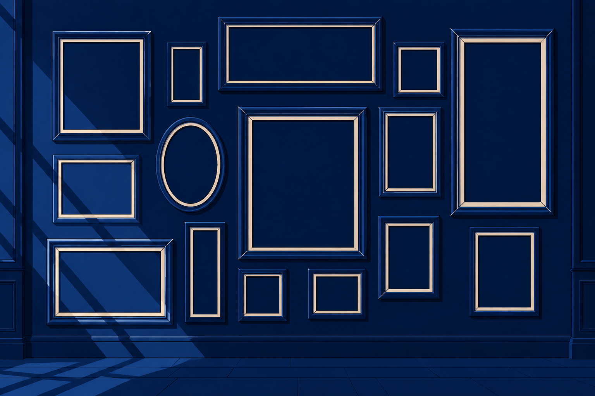
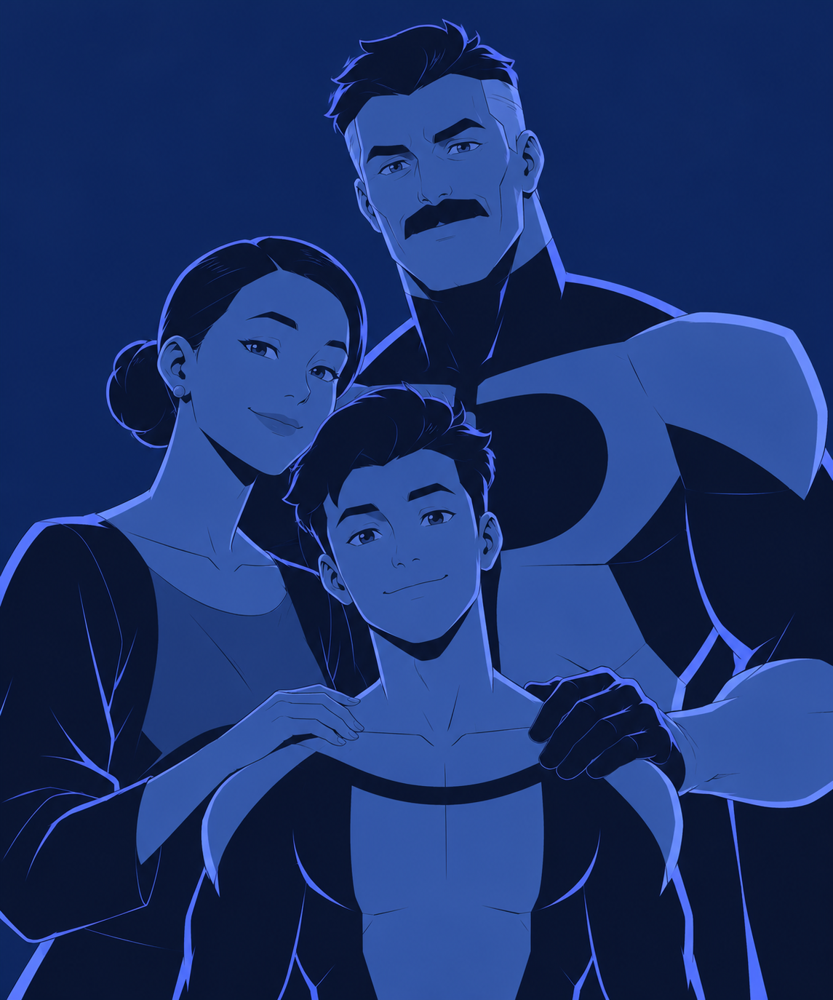
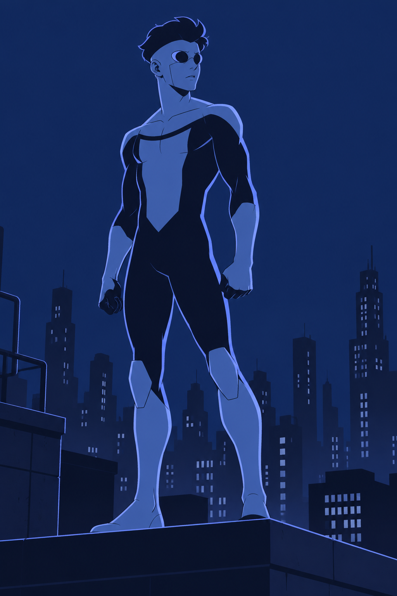
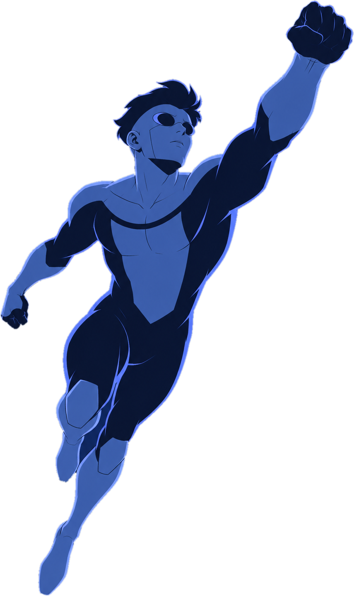
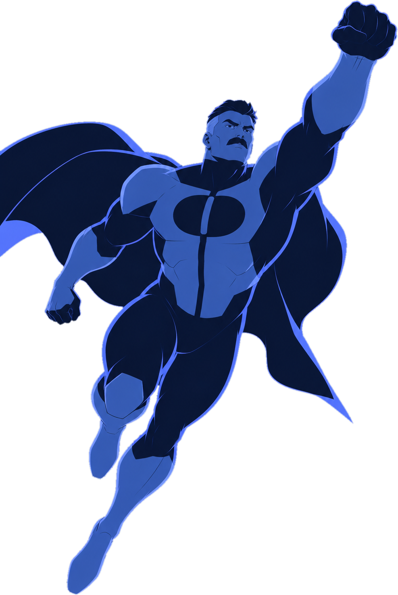
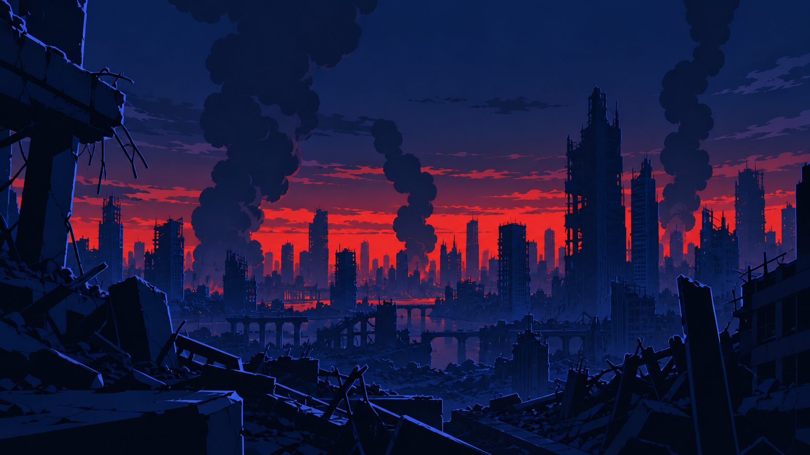
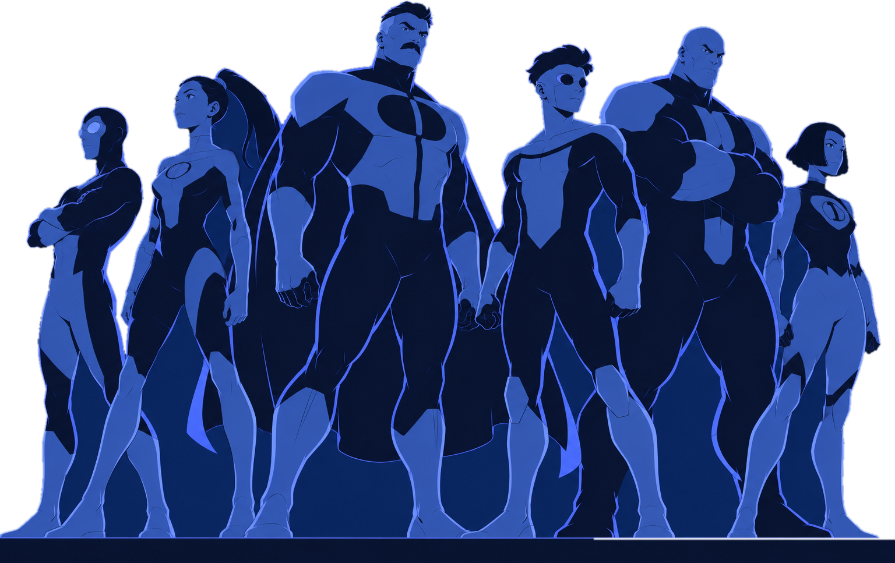
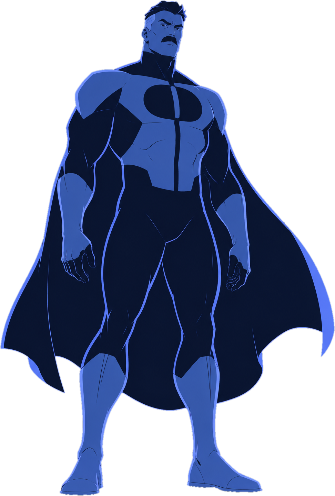

⚠ SPOILER
Seorang ayah yang menjadi pahlawan paling kuat di Bumi.
INVINCIBLE
SEASON 1 · 2021
Invincible, serial animasi karya Robert Kirkman.

MARK GRAYSON
17 TAHUN · PUTRA OMNI-MAN
Mark Grayson, remaja tujuh belas tahun.


Mark ingin mengikuti jejak sang ayah.



Seluruh Guardians of the Globe terbunuh.
Kisah asal-usul Omni-Man ternyata bohong.

VILTRUM
Ia berasal dari Viltrum.
Mark menolak. Ayah dan anak bertarung.
TAFSIRAN
Pesannya sederhana dan menyakitkan.
SIAPA DIRIMU?
TAFSIRAN
Memilih siapa dirinya, bukan siapa ayahnya.